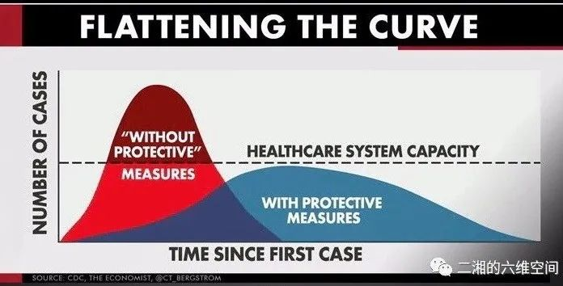
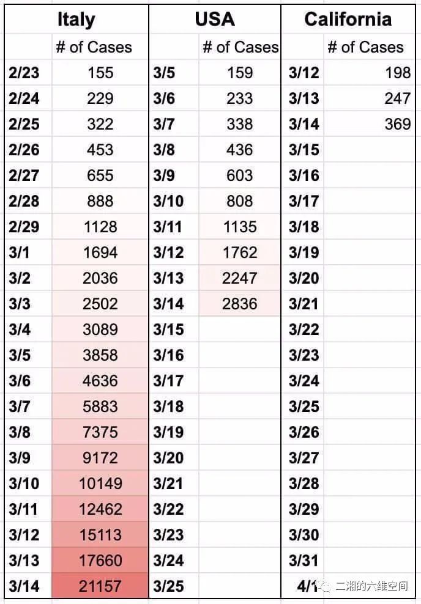
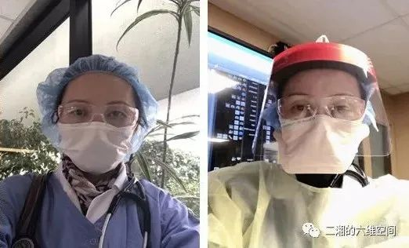
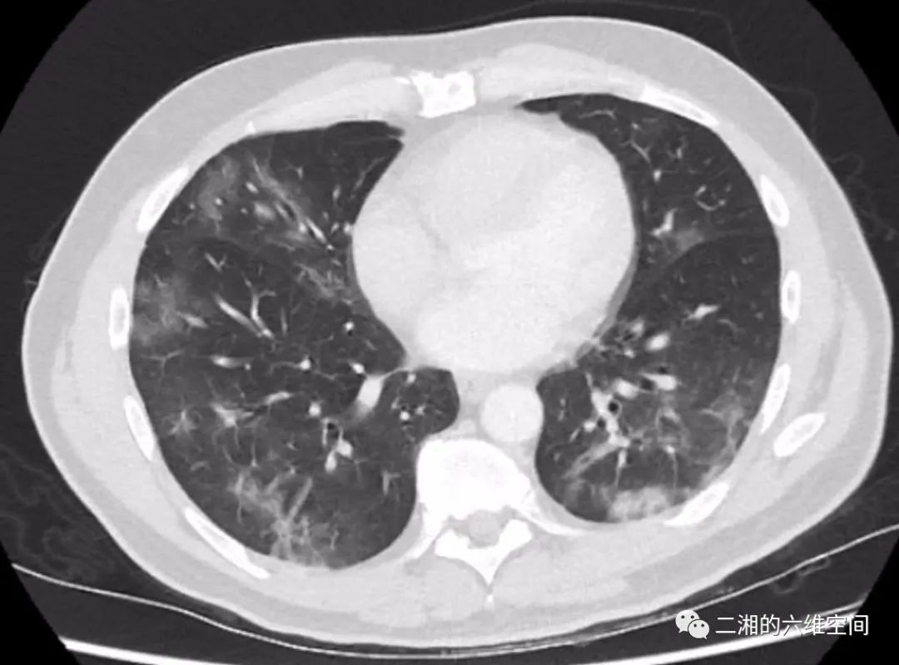

作家方方：疫情看上去稳定，但人心似不太稳（57）-作家方方-财新博客-新世纪的常识传播者-财新网
原文链接 备份链接 3月21日。 封城第59天。这么长时间了！ 昨天那么大的太阳，今天突然就阴了。下午还下了点雨。这时节的春雨，对于院子里的树以及花，都还是很需要的。前两三天，武大樱花盛开，树下空荡无人，估计是记者拍了一些照片，同学群里便 …
作者近照，正文所有图片由作者提供
一个残酷的现实就是，美国的防疫失败，战疫开始！医护人员的近身肉搏战登场。我们今天开始连载硅谷一线医生的日记，最近距离关注美国疫情发展态势，欢迎跟读！
3⁄14/2020： 防疫失败，战疫开始****
应该从3/13日开始，因为昨天川普总统宣布了国家紧急状态，也就是对病毒爆发正式宣战。一个残酷的现实就是，美国的防疫失败，战疫开始！医护人员的近身肉搏战登场。
最后的胜利则依赖于疫苗和特效药、医生所做的就是拖住病毒的后腿，给科学家们争取时间！而当前的战略就是—Flatten the curve! 记住第三张图，记住这个缩写—FTC。在接下来的几周你会反复听到这个词！还是那句话、只要减少不必要的外出旅行聚众活动，普通大众危险性还是很低。也得感谢美国太土了，人口密度低和公交不发达，病毒确实散播比较慢。可对于维持医疗系统正常运作而言，FTC就太重要了，大大降低了医疗挤兑和医院体系崩溃的危险。

我所在的医院，虽然也号称隶属于大湾区地区，其实偏安一隅，服务广大的北加州乡村地区，方圆200英里内数一数二大的医院，北到萨克拉门托南到福瑞斯诺，都会有病患来就诊转院和住院。虽然是乡村医院，但也有了新冠确诊和疑似案例。目前就是提高警惕对每个病人都要认真审视。可能因为胆结石进来，却也伴有呼吸道症状。对这么狡猾的敌人是万万不敢懈怠的。
现在是从吓死宝宝的状态，变成宝宝跟你拼了的模式！
3⁄15/2020： *****依旧故我*
今天一早起来就看到不好的消息，从东岸到西岸已有若干医护人员感染了COVID19，有的还上了呼吸机。虽然知道这是迟早的事，心里还是不免咯噔一下。病毒俨然一副雄赳赳气昂昂跨过太平洋，横扫美利坚的架势。看看图一，其实今天的美国就是3/3号的意大利，加州则再早一周2/25。或者说，美国十天以后也许就是意大利现在的惨状。可是身边大多数非亚裔美国人都非常坦然（无知无畏）才不管国家紧急状态呢，依旧故我，停课停工正好全家去度假、各种销魂的浪啊。

再说回我的医院我的工作吧，昨天我接管了一个低度疑似病例，鼻咽拭子已送检，看了一遍病案，基本可以肯定不是新冠。但既然疑似就得重视，听说这个病毒专治各种不服，我表示相当服气，要全副武装，图二是我入医院的装备，图三是我准备进入负压病房的装备，咦，头盔呢？全身coverup的防护衣呢？！嘿嘿，我只在国内同学的微信圈里看到过。美国就是这条件，别冒充发达国家了，就一个第三世界。但至少我们医院CEO拍了胸脯说N95管够。
我戴着一层外科口罩一层N95, 还加一个面罩，呼吸都有困难了，病人是一个看起来挺健康的老年白人女性，看到医生进来可高兴了，跟我唠起了嗑，问这问那，说她的病史，她的退休家庭医生如何好，现在的家庭医生如何不给力…其实挺能理解的，隔离的负压屋子虽然大，也有电视，但毕竟她出不去别人也进不来。除了医护人员她还能跟谁说话啊。我喘着粗气问她情况，然后帮她想法子解闷儿。她突然神情暗淡，眼圈也红了，低头嘟囔一句，这里呆着真的很难过，像蹲监狱一样。按照道理说3天结果就回来了，可惜赶上周末，只能等周一出报告了。我尽量逗她开心，建议她可以开始准备一个出关爬梯了。护士远比我们辛苦，他们要反复进出送药或者回应病人的要求。

图二 图三
其实真的接管新冠病人或者疑似患者，都会比较小心，只要不进行插管等高危操作，感染几率很小。现在更大可能是在不知不觉中暴露而感染，特别是在医院这样的高危环境里，所以平时的卫生习惯很重要，勤洗手，免触脸，交谈莫靠近。比如一个人一分钟下意识碰触面部大概3次左右，那么有多少机会帮助病毒会播散到黏膜上呢？！很多。所以我戴上护目镜另一个考虑就是防止我自己碰眼睛揉眼睛。
北加战疫日记3 3/16/2020***** 局势瞬息万变*
现在局势瞬息万变，早上我们州长刚刚建议（advise)65岁老人呆在家里，中午就听到大湾区6个郡（counties)要求（order) 居民“shelter in place” （就地庇护）就是柔性封城（lock down), 影响六百万多万人。虽然没有派国民警卫队来帮助封城，但是执法机关有权力检查你是否守规矩呆家里。如被抓到违规外出违规聚众也按犯法行为论处。
虽然我医院所在的市不属于此范围，可好几个医生包括我都住在湾区。大家一下想到咋上班啊？或者不上班？后来有个资历老的医生呵呵一笑，说医院会安排你们的住宿的，现在这时候医院怎么会放过你们。哎，现在还真缺人手。已有医生被要求住家隔离了。于是我们立马开始设想住在医院安排的酒店里下班就开个大爬梯。
更有医生引经据典说，医生在这种紧急情况下可以全美行医，不需要各州执照。于是我们又嗨了，完全忘记了自己身处险境。比如现在防护面罩都很少了，象我看那个低度疑似病人就只能戴大号的护目镜保护面部。
医护人员表示情绪稳定，不稳定能咋办？我问护士你们工会啥时候罢工啊，她说她也想知道。可惜医生被认为是强势职业不允许罢工。而护士工会仅次于汽车工人工会那是有相当大能量的。
我管的那个疑似越来越不像新冠，她自己也是越呆越火大，可公卫（public health)那边还没打报告回来，4天了。这就是国家紧急状态？医疗资源就这么随意浪费吗？我们又有一个转院来的疑似，但还没听说有上呼吸机的。一切似乎都平静如常，但大家心里都清楚真的危机步步逼近，已经不可避免…

3/17/2020：柔性封城第一天
今天是湾区执行柔性封城第一天，路上交通好了不少。可却是阴雨绵绵，湿冷的一天，不知又有多少呼吸道感染的病患要来了。
美国的确诊人数不断攀升，数字的意义已经不大，意大利的惨状似乎就是我们不久的将来。纽约现在是后来居上，一骑绝尘，把华盛顿州和加州远远甩在身后，纽约行医的小伙伴们已经开始应接不暇滴接诊新冠病人。老人院康复中心还有血透中心都是重灾区。
我们医院的分诊用大帐篷终于开始搭建了，看看啥时候建方舱和雷神山吧。终于facial shield 告磬，发给我一个大护目镜，反复强调复用的复用的。
我管的那个疑似病例结果还没出来，叹为观止，5天了，报告还没有回来。国家紧急状态是这么玩的吗？我决定不等了，让她出院回家自我隔离吧。会诊的传染病医生同意了，报备郡里的公卫（public health) 征得同意。病人终于可以回家了。说家里人为她自我隔离做好了准备。出院前做了一个X光胸片，肺部浸润好了很多, 放心了。

3/18/2020：养兵千日用兵一时
柔性封城第二天了，早上开车去上班，听着广播里播报交通情况，各处的高速路都非常通畅了。然后就是鼓励居民好好家里蹲。其中一个医生家属来信特别感人，太太是沦陷区圣塔克拉拉中心医院的医生，他多么希望太太也能不上班，陪着他，孩子和家里的宠物狗一起享受居家时光。可是她作为一名医生不能啊，她身边的同事也有被感染被隔离，她必须顶在前线，她做着她当初选择的职业，无怨无悔。但请居民们能珍惜你们奢侈的家庭团聚的时光，让医院和医护们少一点压力。
是的，我们就像是战士，养兵千日用兵一时，哪个战士不想经历真正炮火的洗礼，不要做英雄，站好自己的岗位。
是的，今天收到一个是高度疑似病患，35岁的农民，否认接触史旅行史， 病程两周，持续肌肉酸痛低热，最近发展出高热和呼吸困难，CT表现典型得可以去发文章了（网络截图）。

传染科医生和感染控制办公室已经和郡里的公共卫生部门打开了嘴仗，我们坚决送检，他们则数落我们过度检测，因为没有旅行史和接触史，真的很让人无语，难道不是你们CDC说的已经进入社区性爆发阶段吗？官僚太官僚。更滑稽的是他们的检测部门居然在全国紧急状态下周末全休，我们提出抗议，他们说没意识到居然周末下属部门休息。
我上来先警告护士要保护好自己，自己判断90%可能性是真的狼来了。停了雾化治疗，保持高度警惕随时准备送ICU。在进入负压隔离室之前，护士长很慷慨地给我准备了一套coverall 不过没头盔。穿上去像个大复活节兔子。没有拍照留念。进去问问病史看看病人，他已经不那么气短了，脱了氧气。看情况放心了，估计今晚不会去重症监护病房（ICU）。
正好有消息说，法国医院小规模用羟基氯喹加阿奇霉素治疗很成功。我赶紧跟传染科医生商量。其他的病人因为其他原因留在医院里的也有合并肺部感染，我也是小心谨慎，审视有多大可能性是新冠肺炎。基本都可以排除。
上次那个低度疑似病人终于终于解除警报了，整整7天才回来。
3/19/2020：美国的病例破万
请记住今天，美国的病例突破了万例。毫无悬念很快就会到5万，已经进入指数增长阶段。
今天加州州长签署了封州令，洛杉矶也封城了。纽约听说要跟进。其实随着美国人民大大咧咧乐观的天性（不识好歹，不负责），只有强制封城比较有用吧。回想整个防疫过程，虽然总统很早就和原发区中国断航了，但是却没有充分提高全民防范意识。其实全民轻度焦虑是很有必要的。美国人民承平日久，不知道除了核武，还有小小病毒可以战胜第一大国。
我的高度疑似病人终于用上了羟基氯喹加阿奇霉素，各项体征稳定。考虑到他体积比较大，我个人只保持谨慎乐观，不可掉以轻心。
CDC继续秀它的智商和职业道德的底线。居然建议如果缺口罩，可以用BANDANAS和围巾来保护自己，新学一词BANDANA，是方巾的意思。哈哈，我觉得用女性卫生巾更靠谱一些呢，我应该去他们网站上建议一下。
因为防护品的短缺，一些医院管理层也开始糊弄医护人员，说不一定需要N95，只需要一般外科口罩看疑似或确诊病例。而非肺炎病人不允许戴口罩。形势就是如此，总统每天都开发布会，和记者们打嘴仗，宣布好消息，比如普测已经开始, 疫苗已在应用，多数也是口惠而实不知何时至。
身边的好消息也是有，比如加州大学戴维斯分校医学院治愈多例新冠而无一名医护人员感染。个人感觉其实还是病例比较少，悬浮的病毒量不够。加州的数字攀升明显乏力，可我就怕洛杉矶3月8日2万人的马拉松带来一波大爆发。屏住呼吸，等待着。
【作者简介】黄鹂：医学博士, 医学，毕业于上海交大医学院（前上海第二医科大）。在美国西奈山和加州大学河滨分校医学院完成内科住院医训练。硅谷某医院住院部医生。

点击阅读更多文章

《狂流》：第1章 第2章 第3章 第4章 第5章第6章 第7章 第8章 第9章
杂评：分裂的朋友圈 遗忘武汉李文亮医生 美国疫情德国疫情 钻石游轮亲历 朱令铊中毒
他山之玉：林白李西闽 刘瑜 冯唐宝树 北星 陈楸帆郝景芳严锋邓安庆 舒飞廉
欢迎收看二湘空间的世界疫情系列，六维，九维都会发。

关注“二湘的九维空间”收看更多疫情日记
今天的《狂流》连载第十章“白天不懂夜的黑发在”二条。
原文链接 备份链接 3月21日。 封城第59天。这么长时间了！ 昨天那么大的太阳，今天突然就阴了。下午还下了点雨。这时节的春雨，对于院子里的树以及花，都还是很需要的。前两三天，武大樱花盛开，树下空荡无人，估计是记者拍了一些照片，同学群里便 …
原文链接 备份链接 本 文 约 3700 字 阅 读 需 要 8 min 在本文的开头，首先有必要让读者明白，作者的讲述绝非完全可信。 我在意大利住了十多年，又是媒体记者，这次意大利疫情爆发以后，很多媒体都来找我，甚至有人愿意出丰厚的稿 …
原文链接 备份链接 一些看似忽然病情恶化的病人，实际上是经历过一段时间的慢性缺氧。部分年轻人的缺氧状态很难被觉察。 早期各大医院对新冠病毒并不了解，认为呼吸科、急诊科和感染科的医生足矣，并不清楚它对人体其它器官的危害。 ICU医生则 …
原文链接 备份链接 致敬所有奋战在一线的医护人员。 武汉的一月，气温总在10度以下，阴雨天气占了大半。2020年1月14日那天，不仅有雨，还有三到四级的风。武汉协和东西湖医院重症监护室（ICU）主任袁海涛和他的同事，推着一个因病毒性肺炎插 …
原文链接 备份链接 【财新网】（记者 萧辉）70岁的李爹爹在新冠重症隔离病房经历过生死关，他没想到，治愈回家后，还要忍受的被周围人冷落和躲避的“自我隔离”生活。 1月26日，李爹爹住进湖北医院隔离病房，一周之内和他同病房的两个病友去世。前 …